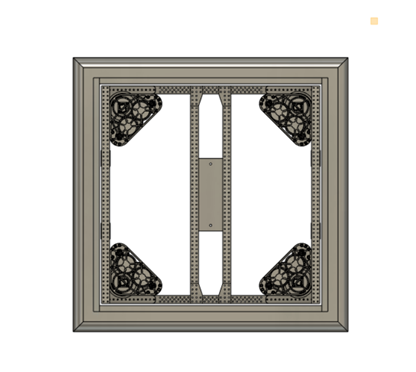
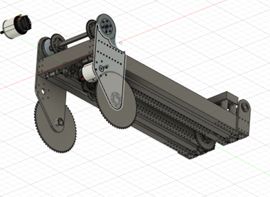

Design
Use the links below to explore our 3 offseason robots:
Cube Shooter
Swerve Bumper Guide
Find parameter of swerve drive using the inspect tool. (27X27)
Create a component named 687-22-A000-BUMPER (Left click top of design tree in browser)
Begin bumper profile by creating a SKETCH on the front plane. Create two 2.5 Diameter circles for the pool noodles.
Use the tangent tool and select the circles (pool noodle profile).
Use the horizontal tool and select circles.
Create a 5 in line on the right side and make that TANGENT to the circles. Then make lines that represent the fabric. Use HORIZONTAL/VERTICAL tool on lines.

Left click 687-22-A000-BUMPER component and isolate.
Unhide the origin. Create an offset for the XZ plane to the upper right corner point. Use” To Object” Extent.
The wood is ¾ thick, so we must figure out the dimensions of the outer wood since we are only making the pool noodle and fabric part. Math – 27(rail) + ¾(wood) + 2(1/16) Rivets +2(1/16) Gussets
Make sure the profile is coincident to the trail.
Now, go to SURFACE and use the SWEEP tool.
Now, select the profile and path (30.625 by 30.625)
Un isolate the bumper component and align it with the swerve drive. Bottom View.
Then align so that there is 1.375 in between each side. Use move tool.
Now, we will begin making the interlocking wood. Create a component for the 28.5X5 plank of wood inside of the bumper component. Name it. Wood-28.5X5
Create the teeth for the one plank. Using these dimensions on each side.
Then extrude by .75
Then do the same but for three teeth instead, matching the two teeth.
Extrude .75 and copy one of each. The wood from the rail should be .25 in
The final product with only wood should look like this. With .25 in on each side.
Make sure that the wood is interlocking on each corner. Finally, you align the bumper using the MOVE tool then, use point to point.

Next, latch placement.
Intake Design

ASSEMBLY- 2X 3:1 gear boxes w/ bag motors 10X bearings 20X 8-32 screws w/ nuts 2X 180T GT2 2X 100:1 gear boxes 4X 48T 9mm pulleys double f
8/21/2023

Drive Base:
We chose a swerve drive base because it is essential for a cube spammer to be able to quickly maneuver around the arena. A swerve drive base would enable our drivers to quickly pick up cubes anywhere on the arena. Compared to a west coast drive base, which is slow and hard to maneuver, it was clear that a swerve drive base would be a better option.
Intake:
We wanted an intake that could
Easily pick up cubes
Quickly drop cubes into the bottom row
Shoot cubes into the mid and high rows
Hard Stop:
We designed our hard stop to hold the intake in a stowed position. The hard stop made programming the pivot a lot easier.
Rotation Linear (RL)
Pivot:
Pivot Idea for RL Bot:
Design a pivot that can rotate and be able to rotate to reach all 3 rows, the top, middle, and bottom rows.
Pivot can rotate to reach both substations and ground to be able to pick up game pieces.
Offset pivot for more extension
Able to have elevator resting down
Able to fit in robot and fit both the elevator and electrical. Inspiration we used for our pivot included robots: • Team 1678 (Citrus Circuit)

(1678 Citrus Circuit’s Pivot) (When using 1678’s pivot as reference, avoid bent plate as we are unable to make that) First Iteration: For the first iteration of the pivot, we based our design on 1678 just without the bent base plate as said. Dimensions that we used were 15 inches for the vertical bar and 15 inches for the horizontal bar, the horizontal bar was raised 2.5 inches. The bars were this long so that it is long enough to clear the swerve modules and it was raised to be over the swerve modules without hitting it.
 First Iteration CAD of Pivot
First Iteration CAD of Pivot
Second Iteration: For our second iteration of the pivot, we shortened the horizontal bars by 3 inches as it gives more space for electrical instead of having 15 inches, now it is 12 inches. Due to the change in length, the motors more to the front instead of the back so that the swerves had enough space. The vertical bars are raised higher to allow more room for the elevator to rotate up and it creates the ability to attach the elevator to the pivot without hitting anything above or below. There’s also a new horizontal bar at the top which is a stoppage point so the elevator doesn’t over rotate. There is an extra plate there to add stiffness. With the new horizontal bar, it serves as a mounting point for the limelight.
Second Iteration CAD of Pivot

Limelight mounted on horizontal bar
Elevator:
Elevator Idea for RL Bot:
2 stages including the base stage
Can extend 73.5 inches at most
Can score high comfortably

The sketches show 73.5 inches of extension for the elevator and extending to the highest node of scoring. Inspiration we used for our elevator: • Is me elevator structure • 1678 plate First Iteration:

Second Iteration:
Wrist
Wrist Idea for RL bot:
Wrist can move 240 degrees
Rotate the intake to pick up from anywhere and the purpose of scoring
Rotate the intake up and down for the purpose of a cone or triangle. Inspiration we used for our elevator:
1678 gearbox wedges

First Iteration

Second Iteration

Intake
Inspiration: For the Intake on our RL bot, we wanted a roller intake that:
Picked up Cone and Cube from the double substation.
Picked up cube from floor.
Pick up the upright cone from the floor.
Drop Cone and Cube fast into hybrid.
Able to reach both first and second stage.
Stowable with both cube and cone (For getting from double substation to scoring).
Able to be compatible with wrist and be efficient with the extra degree of movement. For extra inspiration we looked at 1678 Citrus Circuit’s robot’s intake as well as our own design that meets our needed constraints.

Fig.1b. 687 Nerd Herd’s Intake on season
Fig.2b. 1678 Citrus Circuit’s intake
First Iteration: For the first iteration we decided to go for a 2 Versa-Roller intake in which the cube would fit between the roller and the bar the cube would go through the two rollers. To do this there were a few things that we had to consider:
Fig.3b. First iteration intake

Fig.4b. First iteration intake drawing
Second Iteration: After the initial design, we identified a possible issue where the third shaft could cause interference with cone intake zone. Additionally, we recognized that the existing two-roller configuration was not ideal and had difficulties picking up ground cubes effectively. To address these challenges, we made several modifications. We incorporated an extra roller and transitioned to a Versa Roller setup with rope pulleys, eliminating the need for the third shaft entirely. Furthermore, we added additional material to the side plate to accommodate a third shaft that would help with cube intaking and another shaft for cube renditioning.
Fig 5b Second iteration intake

Fig 6b Additional material was added to the side plates to incorporate a third shaft. (We determined during season that 6.90 was ideal for cube compression).

Fig. 7b. Intake default position on the robot

Fig.8b. Spacing of additional shafts
For rollers, we decided to use the Easy Drop VersaRoller example from VEXpro with a few modifications. To incorporate our pulley that connects to the Falcon 500, we duplicated the left side configuration on both sides of the roller. Additionally, we implemented the West Coast Products 1.625” pulley instead of the sprocket given in the example. When a figure-8 rope configuration is used, the pulleys will allow us to have our rollers rotate in opposite direction without needing the old third-shaft gear setup. Lastly, we also moved the pulleys inside the intake to protect it in case of collisions
Fig 9b VEXpro VersaRoller Easy Drop Example Diagram

Fig 10b WCP-0096 1.625” Pulley
Fig. 11b. Our modified VersaRoller
Fig. 12b. VersaRoller side view
Linear Rotation (LR)
Linear Rotation elevator is a fixed elevator mounted at a fixed angle, with an intake that has a pivot point/rotational element. Benefits of this elevator include the ability to pick up toppled game pieces. There is also a benefit of being able to only worry about one fixed angle.
7/12/2023
Meeting teaching CAD members about drawings and how to make good and efficient drawings. As well as looking at other teams’ videos and generating ideas.

8/4/2023 - Summer Workshop Day #1
Talked with manufacturing about elevator’s ability to be manufactured.

8/11/2023 - Summer Workshop Day #3
Finalized elevator angle for LR
8/12/2023 - Summer Workshop Day #4
This is another iteration of our intake.
8/18/2023
Talked to manufacturing about restrictions and modifications to CAD. Figured out elevator rigging, power transmission, and power chain. Talked to programming about sensors, pitched solutions for mounting. New iterations of intake and elevator

Elevator
The Falcon 500 motor that powers the elevator’s extension is attached to a 27:1 gearbox, and then runs on a chain with 18 teeth to 12 tooth sprockets. This makes a gear ratio of (27:1 * 18:12 = 40.5:1)
Rigging: The rigging system of our cascading elevator uses a chain that is attached to the elevator’s second stage, which moves it up. A string that is attached to both the first stage and third stage and wraps around the second stage lifts the third stage while the second stage is lifted. Thus, the third stage moves the same distance as the second stage relative to their starting points.
One end of the string is attached to the first stage on the crossbar. It goes up the elevator and wraps around the axle attached to the second stage, and then goes down and gets pinned down to the third stage by the gusset on the third stage. It continues down and wraps around the axle on the second stage, going back up and ending at the first stage. The reason we chose to use a cascading system instead of a continuous elevator is mainly the speed by which we get extension and the relative ease through which we can rig it.
This rigging is beneficial to us because of its relative ease to implement in our robot, as well as its higher speed in combination with being suitable to our robot’s needs.

Elevator iterations
This is our older version of the CAD which was much skinnier. Everything from the rigging to power was the same. The reason we went from this version to the wider version is because of the lack of space in the center to hold an intake and overall cramped workspace`. This is the first version of our elevator. It had all the calculations with less attention to detail specifically in the wiring and gussets. The calculations confirmed the feasibility of the design, which gave us confidence to keep going.


Intake
We wanted our intake to be able to pick up cones and cubes from the floor and the single substation. We also wanted to be able to pick up tipped over cones.

6/16/2023
CAD of intake was reviewed in a meeting call. We were informed that belts aren’t optimal for intake. We changed from belts to gears.
6/23/2023
This is a screenshot of another iteration of the intake. It was inspired by 2910, Jack in the Bot.

8/19/23
These are more iterations of the intake created by our members.


We talked to Scott for feedback on the intake.
8/21/23
We were told that our intake had to be a max of 12x12 inches, and our intakes exceeded those limits, so we had to redesign our intakes.


8/24/23
We found out that our intakes wouldn’t work for the robot because it would go over the boundaries of the drive base. We had to make our intakes fit in between the elevator bars. We had to shorten the width of the elevator. We also had to shorten the length of the intake, so it wouldn’t go past the boundaries.

8/26/23
The elevator bars were widened, so we had more freedom with our intake and its width.
8/28/23